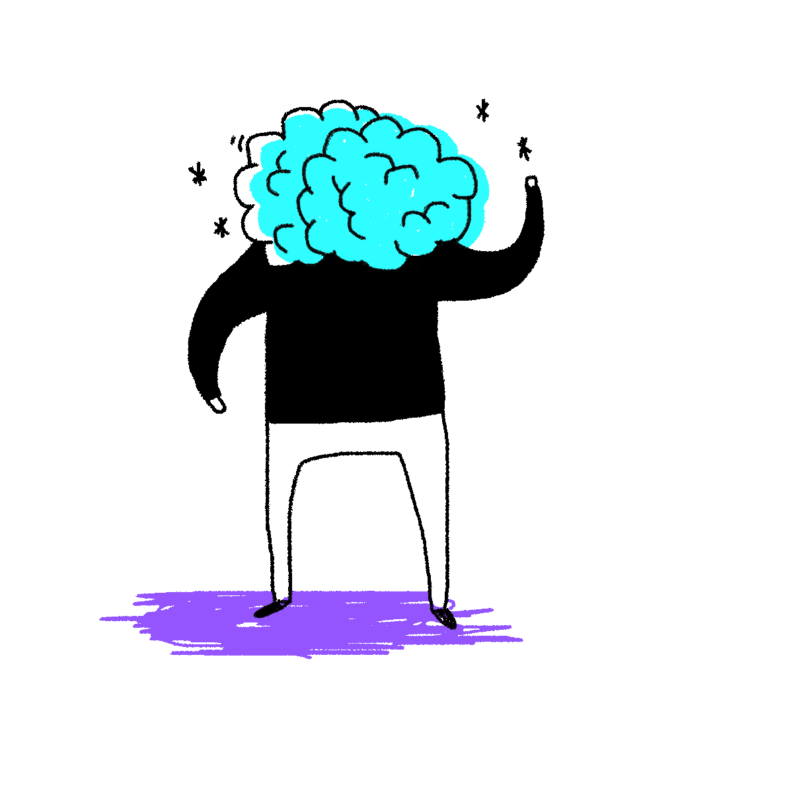

<!DOCTYPE html>
<html lang="de"></html>
<head>
  <meta charset="UTF-8">
  <meta name="viewport" content="width=device-width, initial-scale=1">
  <title>Kstr – Check-In & Out Generator</title>
  <link rel="stylesheet" href="css/normalize.css">
  <link rel="stylesheet" href="css/styles.css">
</head>
<body id="rgb">
  <div class="container">
    <div id="quote-box">
      <p class="quote">Check-In oder Check-Out?</p>
      <p class="source"><span class="citation"></span><span class="year"></span></p>
    </div>
<div class="buttons">
    <div class="btn__wrapper">
      <label>
        <input type="checkbox" id="in" class="btn" onclick="uncheckChecked(this, 'btn')" checked><span>Check-In</span></input>
      </label>
      <label>
        <input type="checkbox" id="out" class=" btn" onclick="uncheckChecked(this, 'btn')"><span>Check-Out</span></input>
      </label>
    </div>

    <div class="filter__wrapper">
      <label>
        <input type="checkbox" id="1" class="filter" onclick="uncheckChecked(this, 'filter')"><span>Freunde</span></input>
      </label>
      <label>
        <input type="checkbox" id="2" class="filter" onclick="uncheckChecked(this, 'filter')"><span>Bekannte</span></input>
      </label>
      <label>
        <input type="checkbox" id="3" class="filter" onclick="uncheckChecked(this, 'filter')"><span>Kompliziert</span></input>
      </label>
    </div>
  </div>

  
  

  <div id="popup" class="overlay light">
    <a class="cancel" href="#"></a>
    <div class="popup">
      <h2>So funktioniert's</h2>
      <div class="content">
        <h3><mark>Ablauf</mark></h3>
        <p>Jede Personen kommt der Reihe nach dran.</p>
        <h3><mark>Zeit</mark></h3>
        <p>Jede Personen hat maximal 1 Minute Redezeit.</p>
        <h3><mark>Und jetzt?</mark></h3>
        <p>Wählt anhand der Tags die passende Kategorie. Bei den Check-In Fragen könnt ihr zusätzlich nach Bekanntschaftsgrad filtern.</br>Drückt dann den großen roten Knopf.</p>
      </div>
    </div>
  </div>

    <button id="loadQuote">Neue Frage</button>
    <a class="info" href="#popup">How to</a>

  </div>
  <script src="js/quotes.js"></script>
  <script src="js/script.js"></script>
</body>
</html>